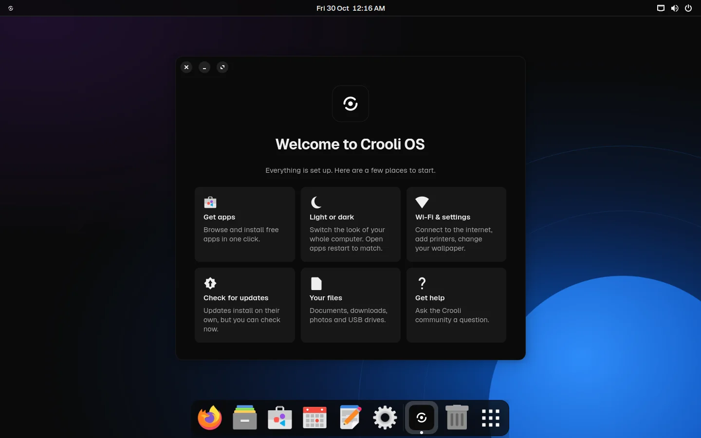
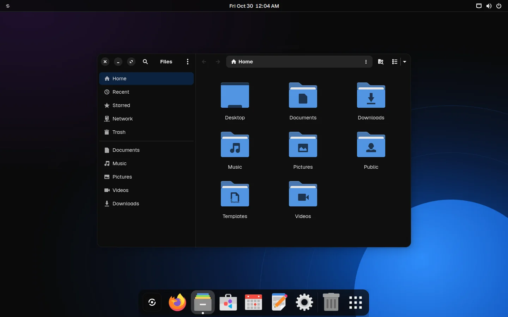
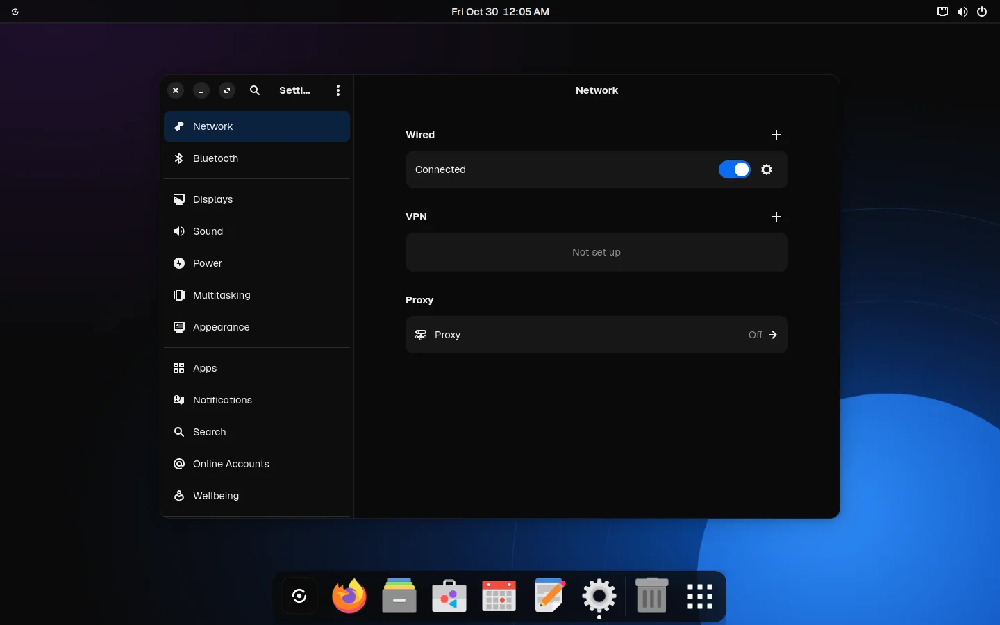
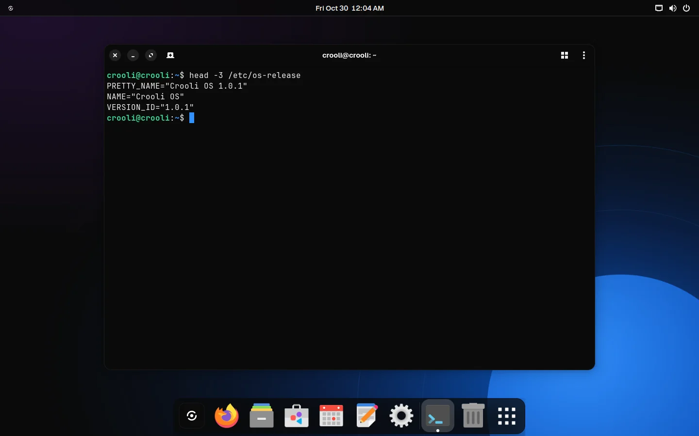
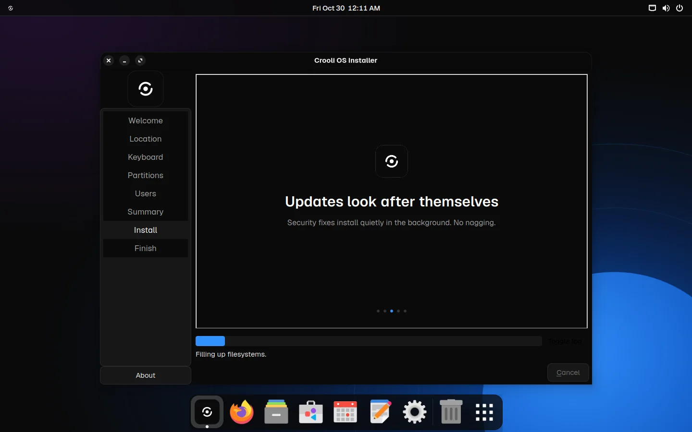

Installs in minutes
Five short screens: language, keyboard, disk, your name, done. Encryption is a single checkbox.
A calm, fast desktop that installs in minutes, looks after its own updates, and gives an older laptop a second life. No Linux experience needed.





Most people don't want an operating system. They want their browser, their files and their photos, on a computer that turns on quickly and never asks them anything strange. Crooli OS is built for exactly that.
Features
Five short screens: language, keyboard, disk, your name, done. Encryption is a single checkbox.
Thousands of free apps, including Spotify, Zoom, VLC, Discord and Steam. Click Install and you're done.
Security fixes install quietly in the background. No pop-ups, no forced restarts in the middle of your work.
A trimmed desktop and compressed memory keep things quick, even on a laptop that struggles with anything newer.
No tracking, no ads, no account to sign up for. Location is off until you turn it on. Your computer is yours.
Wi-Fi, graphics, sound, Bluetooth and printers set up automatically. Secure Boot supported.
Design
One Crooli menu for Settings, the App Store, updates and shutting down. Everything else stays out of the way.
Your most-used apps sit in a floating dock, with the same dark glass as the bar above it.
Ink and Paper, with blue only where it matters. Files, Settings, the terminal and the app store all follow it.
Getting started
Get the Crooli OS file below. It's free and about 2 GB.
Open Flash by Crooli, pick the file, pick your USB stick, click Flash. On a Mac, open it in UTM instead.
Start your computer from the USB stick. Try it for as long as you like, then click Install in the dock.
Open source
Crooli OS is built on Debian, one of the most trusted foundations in computing, with a carefully trimmed GNOME desktop on top. Every package, setting and script is public on GitHub. Read it, build it yourself, or help make it better.
Browse the source →$ git clone https://github.com/xandertaylorx/crooli-os
$ cd crooli-os
$ ./build.sh
Building Crooli OS 1.1 on Debian 13…
✓ crooli-os-1.1-amd64.hybrid.isoVersion 1.1.2. Free, with no account needed.
On a Mac with an M-series chip? Download the Apple silicon version and open it in UTM, choosing Virtualize.